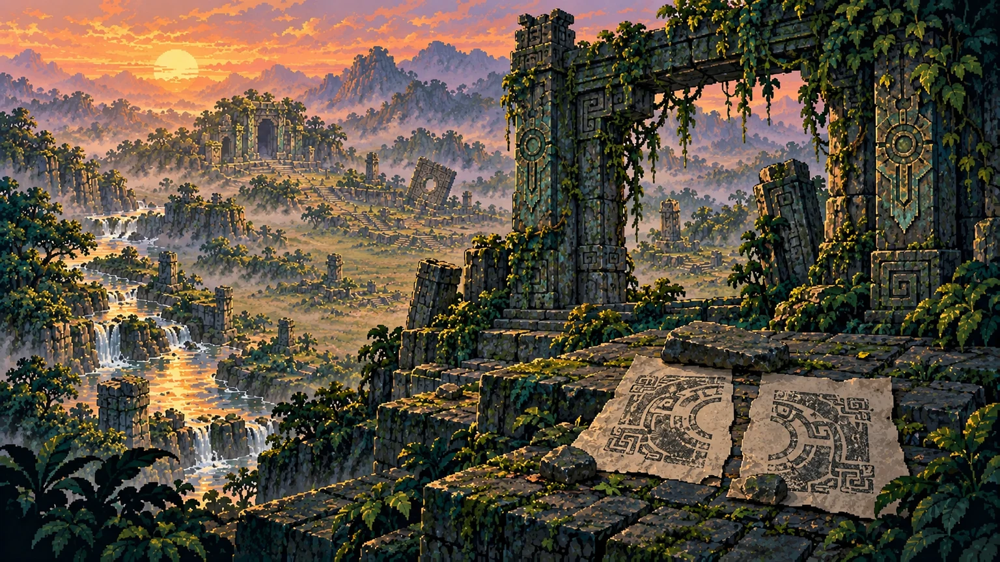
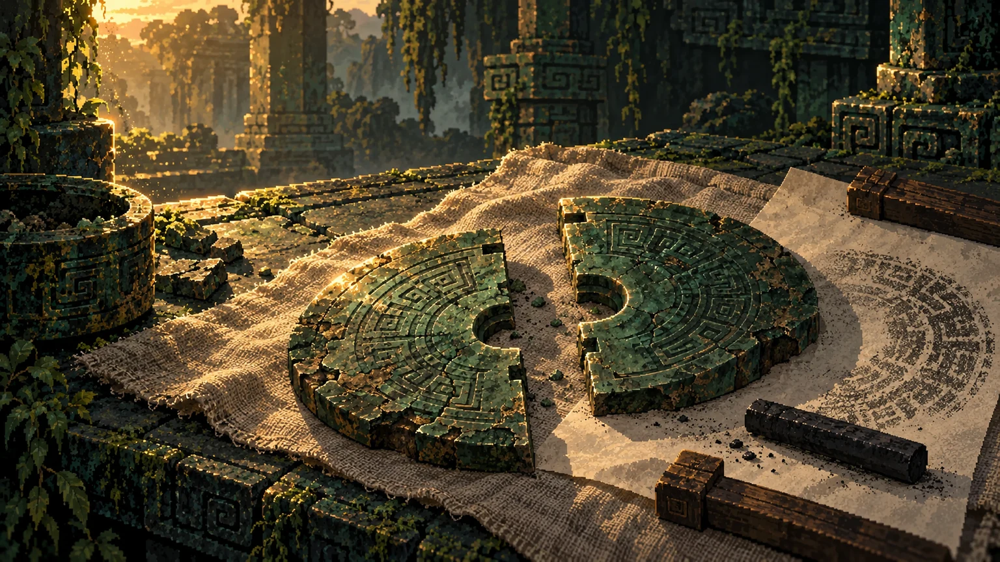
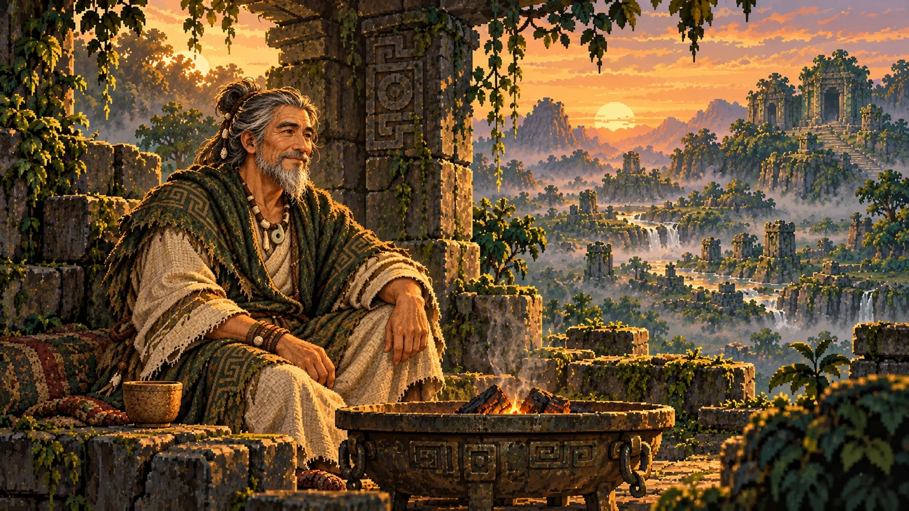
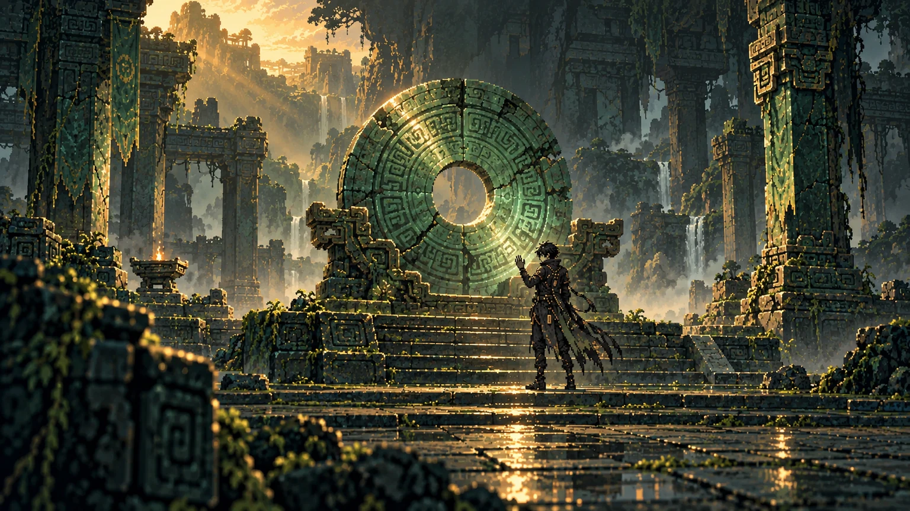

第一章 · 留给后来的人
原创剧情与插图 V1 · 对应片段已接入正式第一章，可在探险中阅读与重温。不改变战斗、路线、奖励或存档。

门没有关 · 剧情插图（非游戏截图）

不完整的档案 · 剧情插图（非游戏截图）

火边的旧话 · 剧情插图（非游戏截图）

古鲁之问 · 剧情插图（非游戏截图）
归还不是失去 · 剧情插图（非游戏截图）阅读完整剧情与四位角色视角
# 第一章 · 留给后来的人
状态：剧情与分镜美术稿 V1。2026-10-05 已将对应片段接入正式第一章开场、实际到访房间、古鲁战前与胜利结尾；完整稿留作阅读。以下为原创幻想叙事，不作为凌家滩考古史实。沿用现有角色与房间，不增加任务、战斗或数值。
## 序 · 门没有关
夕阳落在水道上，像一条缓慢收拢的铜线。入口的石门倒了半边，另一半还站着。有人把一张新拓本压在门下，纸角没有沾灰。
拓本上只有一道未合拢的纹。你把自己的旧卷放到旁边，两道刻线竟接上了。
远处传来三声低响。不是钟声，更像一件沉睡太久的器物，终于记起自己该怎样呼吸。
门后的石阶各自伸向不同的地方。你无法把每一条路都走完，但可以决定带着什么继续。
你翻开档案，在第一页写下：**先看清，再取走。**
### 四位角色的开场替换句
- 德小文：“缺的不是最后一笔。也许是我们一直把开头看错了。”他来寻找一份与家中旧卷相续的拓本，最初相信完整记录便能得到答案。
- 凌小玉：“别急着读。先听它哪一处还在响。”她追寻器物纹路之间的呼应，最初相信准确的顺序能解决一切。
- 菲袅：“好东西经得起看，也经得起不买。”她来核对一枚流转多次的玉签出处，最初习惯先衡量值不值得。
- 羊光光：“石头这么重，总得有人托住。”他寻找旧石工留下的修补痕，最初把保护理解成替别人挡住所有危险。
这些是同一章节的四种视角，并非强制四人组队。剧情不替玩家决定打法。
## 一 · 不完整的档案
残简架上，两片断简相隔一掌。刻线从一片伸出，在另一片继续；旁边却留着宽宽的空白。
你下意识想把空白补满。指尖刚碰到碎边，血珠便渗进纸纹。
石壁上浮出一段很淡的旧拓影：有人曾把两片拼得严丝合缝，又在接缝处重新切开。
那道空白不是遗失。是有人主动留下的。
你可以拼合残纹、承担原有事件代价，也可以包好残片继续走。无论怎么选，档案里都多了一行疑问：**为什么完整的东西，还要留一道缝？**
> 选择修订后的短句：这一式清楚了，空白却没有消失。你只记下自己确实读懂的部分。
>
> 选择离开后的短句：你把残片放回原处。没有读完，并不等于没有看到。
## 二 · 火边的旧话
守火人把陶杯放在石上，杯底碰出一声短响。他看了看你的卷，又看了看已经磨白的纸角。
“一路都在添？”
“总怕漏掉。”
他从火盆边拣起一块木炭，把断开的炭纹并到一起。火星立刻钻进细缝，亮了一瞬，又缓下来。
“合得太紧，火就没有路。留得太宽，它又会跑出去。”
你问他谁在深处守着阵眼。
“古鲁。”他说，“他不是等一个最强的人。他等一个肯停手的人。”
守火人不再解释，仍让你按原有规则选择休息或修订旧式。休息不是怯弱，升级也不是正确答案；走哪条路，带多少余力，由你决定。
### 行商的补充线索
行商递来一枚旧玉签，铜秤却没有落下。
“这一枚不卖。它没有断，只是被人磨去了一段。”
“磨掉的是什么？”
“谁都说是名字。可名字为什么要刻在水路上？”
他将玉签收回匣中：“我只认得出处，不替你认答案。买什么，仍看你这副牌用得上什么。”
台词不赠送物品，不改变购买、整理或离开流程。
## 三 · 石廊的回答
水道裂隙、墨拓石壁、旧物石凳、回声石廊，各留下同一种奇怪的痕迹：不是向中心聚拢的命令，而是从中心分开的细线。
你终于把纸转了半圈。
一直被读成“收拢”的纹，原来在教人“送回”。阵眼不是一只吞下所有东西的匣子。它曾把力量送向水道、石阶和来往的人。
后来有人只记住汇聚，忘了归还。玉脉越积越紧，守阵者便把通路封住。
但这还只是你的解释。深处仍有人需要你亲自回答。
### 随机路线的叙事兼容
本段是章节稿中的总结，不要求玩家走遍事件房。正式接入时只能引用本局实际遇到的线索；未遇到的地点不得写成玩家经历。缺失线索可由阵眼现场的流向刻痕提供基础解释，不能新增强制事件或假装完成探索。
## 四 · 古鲁之问
古鲁站在玉璧前。黑衣的衣角垂在石阶上，手里没有卷。
“你来拿走什么？”
你打开档案，想说答案已经写在里面。他没有低头看。
“带得越多，就越接近这里吗？”
你想到放下的旧式、没有买下的器物，还有没能走到的另一条石阶。
“不一定。”
古鲁抬起手。玉璧上断续的刻纹依次亮起。
“那就让我看见，你怎么用手里剩下的。”
接续现有 Boss 战。胜负仍完全由已有战斗决定，不增加问答增益、剧情免伤或隐藏通关条件。
### 战中短台词候选（尚未接线）
- 开战：“别把每一次亮起，都当成值得追。”
- 防守意图：“留住这一段，才有下一段。”
- 攻击意图：“你看见了，就要承担选择。”
- 胜利后的古鲁：“你让自己的纹路停下了。很好。”不暗示战斗中存在未实现的玉璧目标机制。
## 终 · 归还不是失去
古鲁退开半步。玉璧背后没有宝匣，只有一道被泥沙堵住的浅渠。
你照着地上的刻线，把一块散落的玉片放回石槽。光没有冲上天空。它沿着地面一寸寸走开，绕过裂缝，停在干涸的水口。
第一滴水落下时，殿里所有人都听见了。
“原来缺的，是出口。”你说。
古鲁看着浅渠：“也可能，是愿意让它出去的人。”
你没有把玉片收入背囊。档案末页也没有写“全部找到”，只写下玉片的位置、缺口的方向，以及仍然读不懂的三道刻痕。
归路上，守火人已经把新炭放进火盆。行商的铜秤在风里轻晃。石门下的那张拓本还在，这一次，你把自己的副本压在它旁边。
给后来的人留一条路，也留一页空白。
### 四位角色的收束句
- 德小文：“档案不必装下所有答案，但不能把不知道的写成知道。”
- 凌小玉：“顺序不是让每一纹都服从，是让它们各有去处。”
- 菲袅：“带不走的，也能值得走这一趟。”
- 羊光光：“托住它，不是把它永远攥在手里。”
## 后续剧情钩子（只写稿，不扩内容）
第二章方向：被送回的玉脉在更远的旧址亮起；不同档案对同一纹路存在矛盾记录。问题由“怎样读懂”转向“该相信谁的记录”。
第三章方向：不存在一张能覆盖所有地方的完整拓本。最终抉择不是永久占有阵眼，而是保存出处、承认缺失，让不同的人能继续修订。章节、人物和关卡尚未制作，本轮不冒充已有游戏内容。
## 五张插图与接入边界
| 文件 | 画面 | 用途 |
| --- | --- | --- |
| threshold | 倒了一半的石门、两张无字拓本、夕照水道 | 开篇 |
| missing-line | 两片刻纹断简、刻意留出的接缝、旧纸 | 首个疑问 |
| keeper-fire | 同一位守火人、陶杯、火盆与炭缝 | 章节中段 |
| guardian-question | 现有黑衣古鲁站在实体玉璧旁 | 战前 |
| returned-water | 玉片归槽、低亮玉脉、浅渠第一滴水 | 结尾 |
插图是剧情资产，不是游戏运行截图；不包含 HUD、文字或数值。对应片段已接入正式探险；独立阅读页仍保留完整稿，不改正常地图生成、存档或战斗规则。